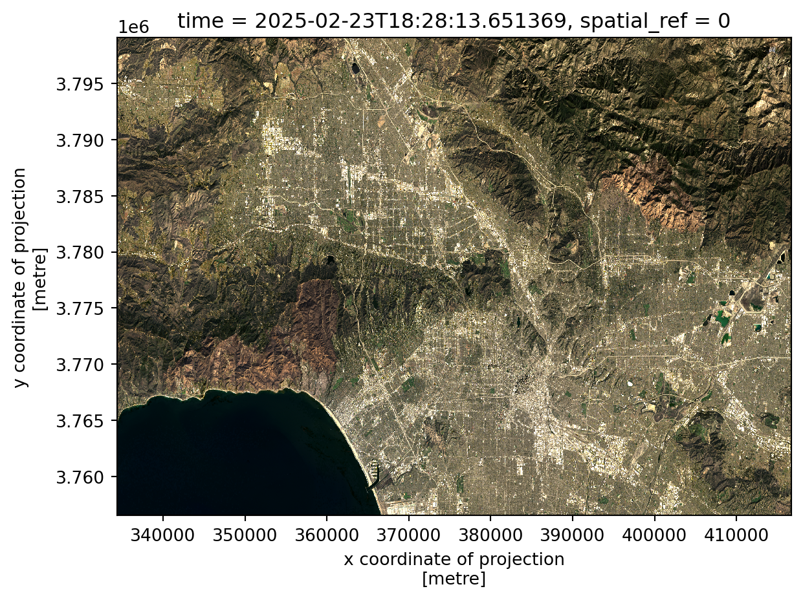
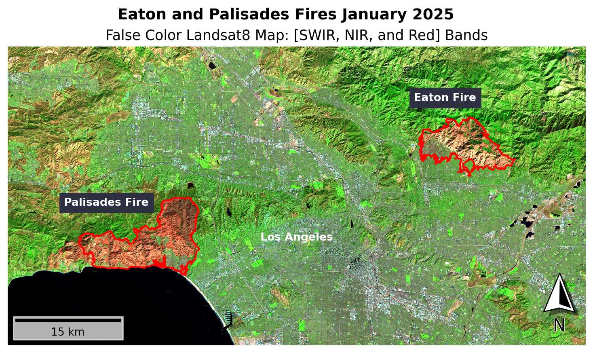
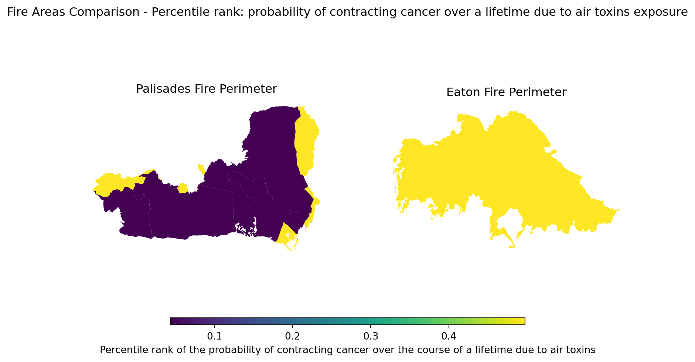
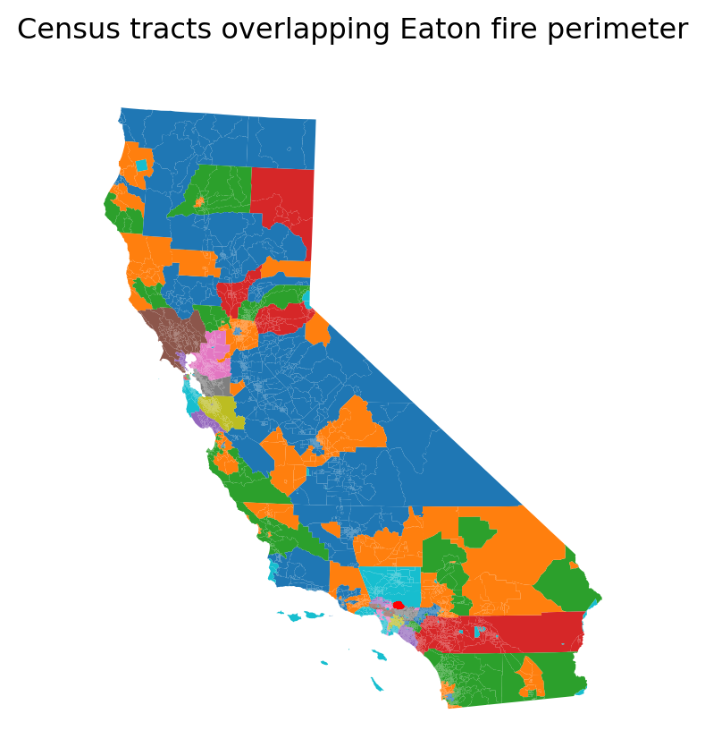
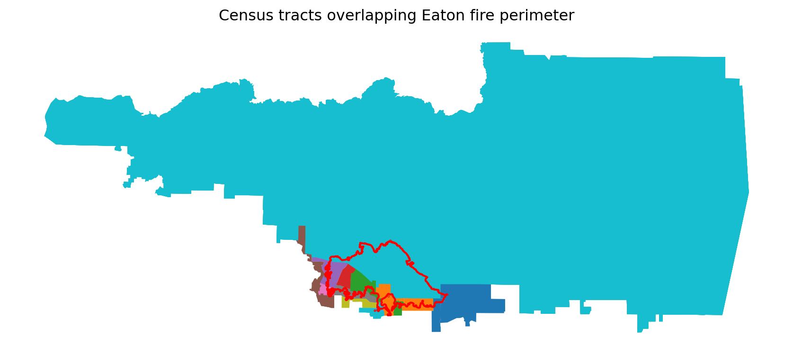

import os
import numpy as np
import pandas as pd
import geopandas as gpd
import xarray as xr
import matplotlib.pyplot as plt
from matplotlib_scalebar.scalebar import ScaleBar
from matplotlib_map_utils.core.north_arrow import NorthArrow, north_arrow
import contextily as ctxGitHub repository: https://github.com/sofiiir/investigating-eaton-and-palisades-fires
About
Purpose:
- Demonstrate mapping NASA and USGS Landsat8 data and National Interagency Fire Center (NIFC) fire boundaries data depicting the Eaton and Palisades Fires that occured in January of 2025. The resulting false color map clearly shows colorations of the fire scars with an overlay of the official fire boundaries. Additionally, this blog exhibits environmental justice data in the Eaton Canyon and Palisades regions. This blog only shows the highlights of this exploration. See the GitHub repository above for the whole analysis.
Highlights:
Landsat data is read in with NetCDF. No CRS is originally assigned to the entire Landsat data. The CRS is held in the
spatial_refvariable. The GeoSpatial data must be restored by using the CRS from thespatial_refvariable.Landsat data is versatile. Landsat 8 has 11 bands that can be selected to make a variety of coloration maps. For example, the red, green, and blue bands can be selected in that order to create a true coloration map.
False color Landsat maps are created by selecting the short-wave infrared (swir22), near-infrared, and red variables (in that order). The false color map best depicts the fire scars on the landscape. Additionally, the false color map includes the fire boundaries for clarity.
Vector data can be utilized to clip raster data. In the case of this analysis, the fire perimeter data is used to crop Environmental Justice Index (EJI) data. This data is then used to analyze potential differences and similarities in environmental justice information in the fire perimeter zones by census tracts.
Datasets descriptions:
Eaton and Palisades Fire perimeters: The fire perimeter data was acquired from the City of Los Angeles official GeoHub. This City of Los Angeles GIS data is originally from the National Inter-agency Fire Center (NIFC) through the Fire Integrated Real-time Intelligence System (FIRIS). Eaton fire and Palisades fire perimeters are included in this download. This data is publicly available.
Landsat8: NASA Landsat satellites in conjunction with USGS acquire data using 11 bands through the use of Operational Land Imager (OLI) and the Thermal Infrared Sensor (TIRS). Landsat satellites orbit earth at a rate of 16 days per cycle making imaging availability satellite location dependent. This data is publicly available.
Environmental Justice Index: ATSDR environmental justice data contains data by census tract and is used to explore EJI differences in the Eaton and Palisades fire areas. This data is publicly available.
Load Necessary Packages
Import Fire Perimeter Data
Use the GeoPandas library to import geospatial data.
fp = os.path.join('data', 'eaton_fire_perimeter', 'Eaton_Perimeter_20250121.shp')
eaton_fire = gpd.read_file(fp)
fp = os.path.join('data', 'palisades_fire_perimeter', 'Palisades_Perimeter_20250121.shp')
palisades_fire = gpd.read_file(fp)Import Landsat Data with NetCDF
Use the xarray library to import Landsat data.
fp = os.path.join('data', 'landsat8-2025-02-23-palisades-eaton.nc')
landsat = xr.open_dataset(fp)Landsat CRS Investigation
print('landsat CRS: ', landsat.rio.crs)landsat CRS: NoneWhen we check the CRS of the Landsat data it doesn’t seem to have a CRS assigned to it. Let’s investigate the Landsat data set.
landsat<xarray.Dataset> Size: 78MB
Dimensions: (y: 1418, x: 2742)
Coordinates:
* y (y) float64 11kB 3.799e+06 3.799e+06 ... 3.757e+06 3.757e+06
* x (x) float64 22kB 3.344e+05 3.344e+05 ... 4.166e+05 4.166e+05
time datetime64[ns] 8B ...
Data variables:
red (y, x) float32 16MB ...
green (y, x) float32 16MB ...
blue (y, x) float32 16MB ...
nir08 (y, x) float32 16MB ...
swir22 (y, x) float32 16MB ...
spatial_ref int64 8B ...The Landsat CRS is stored in the spatial_ref data variable. Let’s reassign this CRS to the whole Landsat data.
landsat = landsat.rio.write_crs(landsat.spatial_ref.crs_wkt)Map the True Color Landsat map
To plot Landsat data, let’s also make sure that none of the bands contain NA values.
# Fill nan values for the RGB bands
landsat_clean = landsat[['red', 'green', 'blue']].to_array().fillna(value = 0)Some cloud cover is present in the Landsat data which would skew our plotting. Add the argument robust = True to remove the outliers from the plot. This uses the 2nd and 98th percentiles of the data to calculate the color limits according to the xarray documentation.
landsat_clean.plot.imshow(robust = True)
Map a False Color Image
False color maps use bands to create spectral visualizations that are different than those visible to the human eye. Here we create a false color map by showing the shortwave infrared/near-infrared/red false color images together in that order. The false color map clearly shows the fire scars from the Eaton and Palisades Fires. Both fire perimeters are also included in the map below to highlight the areas of interest.
In order to accurately map the data with the fire boundaries, the CRS must all match.
Since the Landsat data is a raster, the CRS is checked with .rio.crs as opposed to .crs which checks the CRS of GeoPandas data.
# Check the CRSs
print('landsat CRS: ', landsat.rio.crs)
print('Eaton fire CRS: ', eaton_fire.crs)
print('Palisades fire CRS: ', palisades_fire.crs)landsat CRS: EPSG:32611
Eaton fire CRS: EPSG:3857
Palisades fire CRS: EPSG:3857Not all of the CRSs match. Adjust the CRSs before mapping. Then use assert statements to ensure all of the CRSs match.
# Reproject fire perimeter to the Landsat CRS
eaton_fire = eaton_fire.to_crs(landsat.rio.crs)
palisades_fire = palisades_fire.to_crs(landsat.rio.crs)
# Confirm the CRSs all match
assert eaton_fire.crs == landsat.rio.crs
assert palisades_fire.crs == landsat.rio.crsPlot the false color map.
# Create a figure and subplot
fig, ax = plt.subplots(figsize=(11, 5))
ax.axis('off')
# False color map
landsat[['swir22', 'nir08', 'red']].to_array().plot.imshow(ax = ax,
robust = True)
# Map Eaton Fire perimeter
eaton_fire.plot(ax = ax,
zorder =1,
color = 'none',
edgecolor='red',
linewidth = 1.5
)
# Map Palisades Fire perimeter
palisades_fire.plot(ax = ax,
zorder= 2,
color = 'none',
edgecolor='red',
linewidth = 1.5
)
# Add an Eaton Fire label
plt.figtext(x = .65,
y = .74,
s ="Eaton Fire",
weight = 'bold',
color = "white",
backgroundcolor = "#2D3142")
# Add a Palisade Fire label
plt.figtext(x = .24,
y = .47,
s ="Palisades Fire",
weight = 'bold',
color = "white",
backgroundcolor = "#2D3142")
# Add a Los Angeles label as a reference
plt.figtext(x = .47,
y = .38,
s ="Los Angeles",
weight = 'bold',
color = "white")
# Add a title
ax.set_title('False Color Landsat8 Map: [SWIR, NIR, and Red] Bands', fontsize = 13)
plt.suptitle('Eaton and Palisades Fires January 2025', fontsize = 14, fontweight = 'bold')
# Add a scalebar
ax.add_artist(ScaleBar(1, location = "lower left",box_alpha = 0.7, border_pad = 0.5))
# Add a north arrow
north_arrow(ax=ax, location="lower right", rotation={"crs":32611, "reference":"center"})
plt.show()
False Color Map Analysis
The map above depicts false color imagery for the Eaton and Palisades Fires that took place in January 2025. Landsat raster data was mapped using the shortwave infrared, near-infrared, and red bands to create a false color imagery map. The red on the map depicts fire scars caused by the Eaton and Palisades Fires as the labels show. The green in the map above shows the areas without burn scars while bright green depicts vegetation. Bodies of water including the Pacific Ocean are shown in black in this false imagery. False imagery is being used to more dramatically show the effects of fire on the landscape.
Plot the EJI Data within the Fire Perimeters
Finally, let’s plot the fire perimeters mapping the estimate of the percentage of individuals with cancer.
fig, (ax1, ax2) = plt.subplots(1, 2, figsize=(10, 5))
# E_CANCER: Percentage of individuals with cancer
eji_variable = 'E_CANCER'
# Find common min/max for legend range
vmin = min(palisades_clip[eji_variable].min(), eaton_clip[eji_variable].min())
vmax = max(palisades_clip[eji_variable].max(), eaton_clip[eji_variable].max())
# Plot census tracts within Palisades perimeter
palisades_clip.plot(
column= eji_variable,
vmin=vmin, vmax=vmax,
legend=False,
ax=ax1,
)
ax1.set_title('Palisades Fire Perimeter')
ax1.axis('off')
# Plot census tracts within Eaton perimeter
eaton_clip.plot(
column=eji_variable,
vmin=vmin, vmax=vmax,
legend=False,
ax=ax2,
)
ax2.set_title('Eaton Fire Perimeter')
ax2.axis('off')
# Add overall title
fig.suptitle('Fire Areas Comparison - Estimate of the Percentage of Individuals with Cancer')
# Add shared colorbar at the bottom
sm = plt.cm.ScalarMappable( norm=plt.Normalize(vmin=vmin, vmax=vmax))
cbar_ax = fig.add_axes([0.25, 0.08, 0.5, 0.02]) # [left, bottom, width, height]
cbar = fig.colorbar(sm, cax=cbar_ax, orientation='horizontal')
cbar.set_label('Estimate of the percentage of individuals with cancer')
plt.show()
EJI Map Analysis
The Palisades Fire area has a higher number of estimated percentage of individuals who have cancer than the Eaton Fire area. The Eaton Fire area estimate of percentage of individuals who have cancer ranges approximately from five to eleven percent. The Palisades Fire area estimate of percentage of individauls who have cancer ranges from approximately ten to twelve percent. Though these values and the differences may seem small, the reality of one person having cancer is catastrophic for communities.
These findings are interesting as they are contrary to the expected differences between the Eaton and Palisades Fires areas based on prior knowledge of these communities. The Eaton Canyon community is composed of more people of color and is a historically black community. The Palisades community is largely white and of higher economic status. Further analysis mapping the socioeconomic makeup of these communities can illustrate a broader variety of socio-economic factors. These differences in the estimates of the percentage of individuals that have cancer show that communities suffering from destructive fires do not follow a clear pattern related to this analysis of environmental justice. Further, this analysis shows that natural disasters can effect anyone regardless of socioeconomic status.
References
ATSDR, Place and Health - Geospatial Research, Analysis, and Services Program (GRASP), EJI Data Download . (n.d.) Available: https://www.atsdr.cdc.gov/place-health/php/eji/eji-data-download.html. [Accessed November 17, 2025]
C. Galaz Garcia and A. Adams, EDS 220 - Working with Environmental Datasets. (n.d.) Available: https://meds-eds-220.github.io/MEDS-eds-220-course/. [Accessed November 17, 2025]
City of Los Angeles GeoHub / NIFC FIRIS(2025).Palisades and Eaton Dissolved Fire Perimeters (2025) [Shapefile]. Available: https://egis-lacounty.hub.arcgis.com/maps/ad51845ea5fb4eb483bc2a7c38b2370c/about. [Retrieved November 17, 2025]
Earth Resources Observation and Science (EROS) Center. (2020). Landsat 8-9 Operational Land Imager / Thermal Infrared Sensor Level-2, Collection 2 [dataset]. U.S. Geological Survey. https://doi.org/10.5066/P9OGBGM6. Available: https://www.usgs.gov/centers/eros/science/usgs-eros-archive-landsat-archives-landsat-8-9-olitirs-collection-2-level-2. [Accessed November 17 ,2025]
Humboldt State GeoSpatial Online - GeoSpatial Lessons: Natural and False Color Composites. Available: https://gsp.humboldt.edu/olm/Courses/GSP_216/lessons/composites.html. [Accessed December 12 ,2025]
NASA Earth Observatory. (2014, Mar. 4). Why is that forest red and that cloud blue? How to interpret a false-color satellite image. Available: https://earthobservatory.nasa.gov/features/FalseColor. [Accessed: November 18, 2025]
U.S. Geological Survey. (n.d.). What are the band designations for the Landsat satellites? Available: https://www.usgs.gov/faqs/what-are-band-designations-landsat-satellites. [Accessed: November 18, 2025]
U.S. Geological Survey. (2021, Nov. 12). Common Landsat band combinations. Available: https://www.usgs.gov/media/images/common-landsat-band-combinations. [Accessed: November 18, 2025]
Citation
BibTeX citation:
@online{rodas2025,
author = {Rodas, Sofia},
title = {Exploring the {Eaton} and {Palisades} {Fire} in {Python}},
date = {2025-12-12},
url = {https://sofiiir.github.io/blog/eaton-and-palisades-fire-blog/},
langid = {en}
}
For attribution, please cite this work as:
Rodas, Sofia. 2025. “Exploring the Eaton and Palisades Fire in
Python.” December 12, 2025. https://sofiiir.github.io/blog/eaton-and-palisades-fire-blog/.
Social Dimensions of the Eaton and Palisades Fires
Let’s explore some of the Environmental Justice Index data. The dataframe includes a variety of environmental justice indices. The aspect of greatest interest to me is the estimate of the percentage of individuals with cancer. Based on my prior studies this is particularly informative to show environmental justice risks because it is a result of a variety of envrionmental toxins.
The data frame denotes this column as:
Import Environmental Justice Index (EJI) Data
Data Wrangling
Again, all of the CRSs must match to accurately map the intended regions. Since we have already confirmed that the Eaton and Palisades Fires CRS match, we can just use the CRS of one of the fire perimeters to change the CRS of our Environmental Justice data. Then we can make sure that the CRS are the same using an assert statement.
We join the fire perimeter data with the EJI data. The default is to only keep the portions of the data that intersect. The EJI data is cropped to areas where the EJI raster intersects with the fire perimeters. We’ll save these as their own objects to use for mapping below.
Let’s look at how the fire perimeters overlap with the census tracts.


Some of the census tracts were only partially within the fire perimeter. The only Environmental Justice Index areas of interest are those within the fire perimeters. Let’s clip the Environmental Justice data by the perimeters and save them to new objects for mapping purposes.